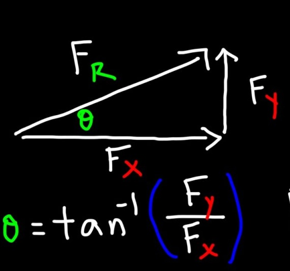

Day 04 - Mathematical Preliminaries#
Questions? Make sure to upvote questions


RaiseMyHand#
Tool should be available for each class period.
Answers to your questions are also written up after class
Links to each day posted in MS Teams
Would appreciate your feedback and/or ideas for use cases
Announcements#
Homework 1 is due this Friday
Homework 2 is posted now
Help sessions start this week
DC - Fridays at 10:00-12:00 and 16:00-17:00 (1248 BPS)
Mihir (ULA) will host additional help hours soon
Seminars this week#
WEDNESDAY, January 21, 2026#
Astronomy Seminar, 1:30 p.m., BPS 1400 & Zoom Speaker: Yuan Li, UMass - Amherst Title: TBA Zoom Link: https://msu.zoom.us/j/93334479606?pwd=OtIXPWhRPBfzYu53sl3trSJlaBYI7C.1 Passcode: 825824
Seminars this week#
THURSDAY, January 22, 2026#
Colloquium, Seminar, 3:30 p.m., BPS 1415 & Zoom Refreshments at 3:00 BPS in BPS 1400 Speaker: Richard Lenski, MSU Title: Dynamics and Repeatability of Evolution in a Long-Term Experiment with Bacteria Zoom Link: https://msu.zoom.us/j/94951062663 Password: 2002
Seminars this week#
FRIDAY, January 23, 2026#
QuIC, Seminar, 12:40 p.m., BPS 1300 & Zoom Speaker: Ben DalFavero, MSU Title: Fault tolerant quantum computing I
Goals for this week#
Be able to answer the following questions.#
What are the essential physics models for single particles?
How do we setup problems in classical mechanics?
What mathematics do we need to get started?
How do we solve the equations of motion?
Reminders from Day 03#
In a Newtonian world, we start from a vector description of motion
Differential equations are mathematical models that describe the motion of particles
We can use different methods to solve these differential equations
i-Clicker: https://join.iclicker.com/PRJO
Content Check-in Week 2#
I appreciate y’all taking the time to complete it!
Lots of reading, Danny! WTF?!?!
Remember 90 minutes a week. Take your time and break it up.
The reading is so dense and covers many topics.
Each of you knows well how you learn; Lean on your strengths
Talk to each other!
MS Teams is there for this discussion also.
More examples, please.
We will do more in class and on workshop days
Clicker Question 4-1#
I feel confident in my abilities to use VS Code for my homework
Strongly Agree
Agree
We’ll see
Disagree
Strongly disagree
Projectile Motion#

Clicker Question 4-2#
For this fountain, what is the best guess for the acceleration (\(\mathbf{a} = ??\)) experienced by a fluid particle?
Assume \(y\) is positive upward; \(x\) is positive to the right.
\(a_x \neq 0, a_y = g\)
\(a_x = 0, a_y = g\)
\(a_x \neq 0, a_y = -g\)
\(a_x = 0, a_y = -g\)
Something else
Clicker Question 4-3#
I feel comfortable with a discrete formulation of Newton’s Laws.
Yes, I got this.
I recall some ideas, but let’s check in.
I’m not sure.
I really don’t know what discrete formulation means here
???
Clicker Question 4-4#
The average velocity for a macroscopic time step \(\Delta t = t_f - t_i\) is given by:
where \(\Delta \mathbf{r} = \mathbf{r}_f - \mathbf{r}_i\). At what time do we estimate the average velocity occurs?
\(t_i\)
\(t_f\)
Sometime between \(t_f\) and \(t_i\)
\(\dfrac{t_f-t_i}{2}\)
Clicker Question 4-5#
I feel comfortable with vectors, vector decomposition, and trigonometry in Cartesian coordinates.
Yes, I got this.
I recall some ideas, but let’s check in.
I’m not sure.
I don’t feel too confident with vectors.
Clicker Question 4-6#
Consider the generic position vector \(\vec{R}\) for a particle in 2D space. Which of the following describes the direction of the vector in plane polar coordinates (\(r\), \(\phi\))?
\(\hat{R}\)
\(\hat{r}\)
\(\hat{\phi}\)
Some combination of \(\hat{r}\) and \(\hat{\phi}\)
I’m not sure.
Group Discussion 4-1#
We found the following expression for the equation of motion of a falling ball subject to air resistance:
What are the units of the constants \(b\) and \(c\)?
Group Discussion 4-2#
Consider the generic position vector \(\vec{R}\) for a particle in 2D space. Find the velocity vector \(\vec{V}\) for the particle in Cartesian coordinates (\(x\), \(y\)).
What happens in plane polar coordinates?
Note: